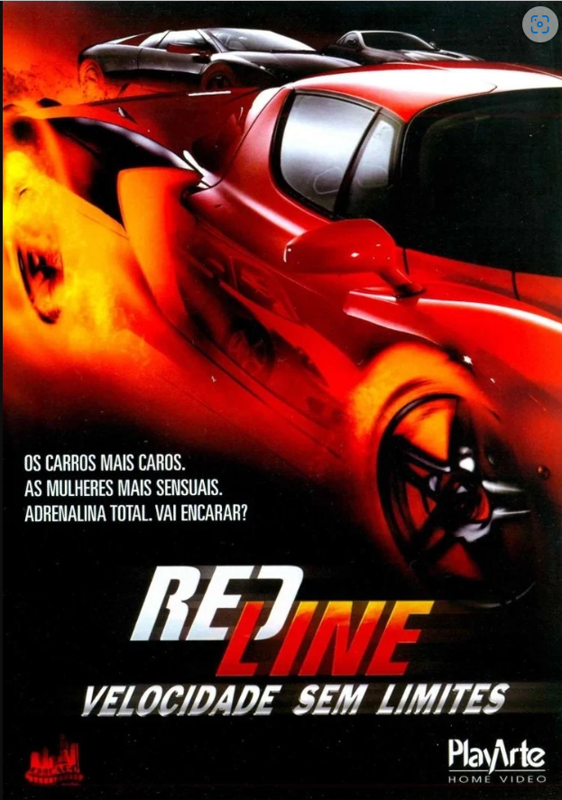

Bumblebee

Refugiado em um ferro-velho na Califórnia, Bumblebee, machucado e sem condição de uso, é encontrado e consertado pela jovem Charlie. Quando Bee ganha vida, a garota percebe que seu novo amigo é bem mais do que um simples automóvel.
Data de lançamento: 25 de dezembro de 2018 (Brasil)
Diretor: Travis Knight
Transformers - O Filme
O destino da humanidade está em jogo quando duas raças de robôs, os Autobots e os vilões Decepticons, chegam à Terra. Os robôs possuem a capacidade de se transformarem em diferentes objetos mecânicos enquanto buscam a chave do poder supremo com a ajuda do jovem Sam.
Data de lançamento: 18 de julho de 2007 (Brasil)
Diretor: Michael Bay
Redline: Velocidade sem Limites
Natasha Martin é a vocalista de uma das mais promissoras bandas da Costa Oeste dos Estados Unidos, sendo também fanática por automobilismo. Um dia ela se envolve em uma competição de corridas ilegais que possuem alguns dos carros mais caros do planeta e que é organizada para o prazer de um grupo de milionários entediados. Além disto, Natasha precisa lidar com o envolvimento da máfia, que decide investir milhões de dólares no torneio.
Data de lançamento: 13 de abril de 2007 (EUA)
Diretor: Andy Cheng
Carga Explosiva 3

A última tarefa de Frank Martin é proteger Valentina, a cínica filha de um oficial ucraniano. Enquanto seu pai pensa sobre o que fazer com três barcos carregados de resíduos tóxicos, Frank precisa proteger a mulher problemática e impedi-la de se afastar muito de seu veículo ou evitar o risco de detonar os explosivos que os dois estão usando.
Data de lançamento: 12 de dezembro de 2008 (Brasil)
Diretor: Olivier Megaton
A Guerra do Amanhã

O mundo fica chocado quando um grupo de viajantes do tempo chega em 2051 para entregar uma mensagem urgente: trinta anos no futuro, a humanidade está perdendo uma guerra global contra uma espécie alienígena mortal.
Data de lançamento: 2 de julho de 2021 (mundial)
Diretor: Chris McKay
Produção: David S. Goyer, David Ellison, Don Granger, Jules Daly, Adam Kolbrenner, Dana Goldberg
Roteiro: Zach Dean
Os Mercenários

Um grupo de mercenários, liderado por Barney Ross e composto de seus homens de confiança, aceita uma missão que parece ser rotineira: uma operação secreta, a mando da Igreja, para invadir o país sul-americano de Vilena e derrubar seu ditador. Não demora muito para o grupo perceber que a missão é uma operação suicida. Presos em uma perigosa teia de traições, mas sabendo que um inocente está em perigo, Barney e seus homens decidem finalizar o trabalho.
Data de lançamento: 13 de agosto de 2010 (Brasil)
Diretor: Sylvester Stallone
Gigantes de aço

Em um futuro próximo, as máquinas substituem os homens no ringue. As lutas de boxe acontecem entre robôs de alta tecnologia. Charlie, um ex-lutador frustrado, se une ao filho para construir um competidor imbatível.
Data de lançamento: 21 de outubro de 2011 (Brasil)
Diretor: Shawn Levy
Bilheteria: 299,3 milhões USD
Orçamento: 80 milhões USD, 110 milhões USD
Música composta por: Danny Elfman
Velozes e Furiosos 5: Operação Rio

No Rio de Janeiro, eles são obrigados a fazer um último trabalho antes de ganhar sua liberdade definitiva. Brian e Dom montam uma equipe de elite de pilotos de carro para executar a tarefa, mas precisam enfrentar um empresário corrupto e também um obstinado agente federal norte-americano.
Data de lançamento: 29 de abril de 2011 (EUA)
Diretor: Justin LinVelozes e Furiosos 6

Desde que o golpe de Dom e Brian no Rio de Janeiro deixou o grupo com 100 milhões de dólares, a equipe se espalhou pelo mundo. Um dia, Hobbs pede a Dom que reúna um grupo de elite em Londres e apreenda uma organização de mercenários nas ruas, cujo mentor é apoiado por Letty, a antiga namorada de Dom que ele acreditava estar morta.
Data de lançamento: 24 de maio de 2013 (Brasil)
Diretor: Justin Lin
Velozes e Furiosos 7
Após os acontecimentos em Londres, Dom, Brian, Letty e o resto da equipe têm a chance de voltar para os Estados Unidos e recomeçar suas vidas.Agora, a equipe tem de unir forças para deter um vilão novo e ainda mais perigoso.
Data de lançamento: 2 de abril de 2015 (Brasil)
Diretor: James Wan
Distribuído por: Universal Studios
Velozes e Furiosos 10

Dom Toretto e sua família devem lidar com o adversário mais letal que já enfrentaram. Alimentada pela vingança, uma ameaça terrível emerge das sombras do passado para destruir o mundo de Dom e todos que ele ama.
Data de lançamento: 19 de maio de 2023 (Brasil)
Diretor: Louis Leterrier
Missão Impossível 2

Ethan Hunt retorna para liderar sua equipe em uma missão que pretende capturar um vírus mortal alemão antes que ele seja liberado por terroristas. Sua missão é fazer o impossível, até porque ele não é a única pessoa procurando as amostras da doença. Ele também compete com uma gangue de terroristas internacionais, liderados por um ex-agente que já roubou a cura para o vírus.
Data de lançamento: 24 de maio de 2000 (EUA)
Diretor: John Woo
O Grande Assalto

Chris Potamitis (Liam Hemsworth) sonha em trabalhar como policial, mas como não consegue passar na prova de admissão, acaba aceitando um pequeno emprego como segurança do famoso Empire State Building. Quando descobre que a segurança do local é cheia de falhas, ele e um amigo, Eddie (Michael Angarano) planejam um roubo milionário nos cofres do local. Mas ambos enfrentam dois problemas pelo caminho: a presença de uma máfia local, que já pretendia executar um plano semelhante, e a vigilância de um policial linha dura (Dwayne Johnson), que suspeita dos planos dos rapazes e passa a espiar as ações dos dois.
Data de lançamento: 19 de março de 2013 (mundial)
Diretor: Dito Montiel
Top Gun - Ases Indomáveis

A escola naval de pilotos é onde o melhor dos melhores treinam para refinar suas habilidades de voo de elite. Quando o piloto Maverick é enviado para a escola, sua atitude irresponsável e comportamento arrogante o colocam em desacordo com os outros pilotos, especialmente Iceman. Porém Maverick não está apenas competindo para ser o piloto superior de caça, ele também está lutando pela atenção de sua bonita instrutora de voo, Charlotte Blackwood.
Data de lançamento: 10 de julho de 1986 (Brasil)
Diretor: Tony Scott
Lançamento em DVD: 20 de outubro de 1998
Top Gun: Maverick

Depois de mais de 30 anos de serviço como um dos principais aviadores da Marinha, Pete "Maverick" Mitchell está de volta, rompendo os limites como um piloto de testes corajoso. No mundo contemporâneo das guerras tecnológicas, Maverick enfrenta drones e prova que o fator humano ainda é essencial.
Data de lançamento: 26 de maio de 2022 (Brasil)
Diretor: Joseph Kosinski
Karate Kid

Um garoto de 12 anos chamado Dre Parker se muda para a China com a mãe e se vê em um terra estranha. Ele sabe um pouco de caratê, mas suas habilidades não são o bastante para enfrentar o valentão da escola, Cheng. Dre faz amizade com o Sr. Han, um mestre das artes marciais, que lhe ensina os segredos do kung fu na esperança de que o garoto possa derrotar Cheng e, quem sabe, conquistar o coração da linda Mei Ying.
Data de lançamento: 27 de agosto de 2010 (Brasil)
Diretor: Harald Zwart
Música composta por: James Horner
Triplo X

Xander Cage (Vin Diesel) é um atleta de esportes radicais famoso por suas performances em público que desafiavam a própria morte. Apostando em sua capacidade em decifrar crimes não solucionados por espiões comuns, Gibbons (Samuel L. Jackson), um agente da NSA, decide recrutá-lo para sua organização. Xander aceita o convite e é escalado para uma missão onde enfrentará um inteligente, organizado e implacável inimigo.
Data de lançamento: 6 de setembro de 2002 (Brasil)
Diretor: Rob CohenGuardiões da Galáxia 3

Peter Quill, ainda se recuperando da perda de Gamora, deve reunir os Guardiões da Galáxia em uma missão para defender o universo, além de proteger um dos integrantes do grupo
Data de lançamento: 5 de maio de 2023 (EUA)
Diretor: James Gunn
Roteiro: James Gunn
Capitã Marvel: The Marvels

Capitã Marvel, Ms. Marvel e Monica Rambeau estão envolvidas em um misterioso fenômeno em que seus poderes estão interligados, fazendo com que elas troquem de lugar sem entender a causa para tal.
Data de lançamento: 9 de novembro de 2023 (Brasil)
Diretora: Nia DaCosta
Roteiro: Nia DaCosta, Megan McDonnell, Zeb Wells
Produção: Kevin Feige
Trem-Bala

Em um trem-bala indo rapidamente de Tóquio a Morioka, cinco assassinos profissionais descobrem que possuem o mesmo objetivo.
Data de lançamento: 4 de agosto de 2022 (Brasil)
Diretor: David Leitch
Autor: Kōtarō Isaka
O Guarda Costas

Frank Farmer, um guarda-costas altamente eficiente e caro, é contratado para proteger Rachel Marron, uma grande cantora e atriz que está recebendo cartas anônimas e ameaçadoras. Frank é um ex-agente do Serviço Secreto que ainda não se perdoou do sentimento de culpa em relação à sua inabilidade de proteger o presidente Reagan, que quase foi assassinado. Frank e Rachel se apaixonam e logo ele se torna parte integrante do círculo íntimo dela. Paralelamente, novos atentados acontecem.
Data de lançamento: 15 de janeiro de 1993 (Brasil)
Diretor: Mick Jackson
Música composta por: Alan Silvestri
Prêmios: People's Choice Award: Melhor Ator em Filme de Drama
Gênero: suspense; drama; romance
À Prova de Fogo

No trabalho, o bombeiro Caleb Holt é um profissional que cumpre com todos os princípios, sendo um deles nunca deixar um companheiro para trás em uma situação de perigo. Em sua casa, ao lado da esposa Catherine, as coisas são bem diferentes. Caleb é um marido ausente. Depois de sete anos de união, o relacionamento está chegando ao fim. O pai de Caleb pede então que ele inicie uma experiência de 40 dias denominada "O Desafio do Amor", na tentativa de salvar o casamento.
Data de lançamento: 26 de setembro de 2008 (EUA)
Bilheteria: 33,5 milhões USD
Distribuído por: Samuel Goldwyn Films, Affirm Films
A Procura da Felicidade

Chris enfrenta sérios problemas financeiros e Linda, sua esposa, decide partir. Ele agora é pai solteiro e precisa cuidar de Christopher, seu filho de 5 anos. Chris tenta usar sua habilidade como vendedor para conseguir um emprego melhor, mas só consegue um estágio não remunerado. Seus problemas financeiros não podem esperar uma promoção e eles acabam despejados. Chris e Christopher passam a dormir em abrigos ou onde quer que consigam um refúgio, mantendo a esperança de que dias melhores virão.
Data de lançamento: 2 de fevereiro de 2007 (Brasil)
Gabriele Muccino
Sempre ao Seu Lado

Professor universitário encontra na estação de trem um filhote de cachorro da raça Akita, conhecida por sua lealdade. O cão passa a acompanhá-lo até a estação de trem e esperar sua volta. Até que um acontecimento inesperado altera sua vida.
Data de lançamento: 24 de outubro de 2009 (Brasil)
Diretor: Lasse Hallström
A Lagoa Azul

Depois de um naufrágio, duas crianças e o cozinheiro de um navio vão parar em uma ilha deserta do Pacífico. O cozinheiro morre, deixando o menino Richard e a menina Emmeline sozinhos. Isolados do mundo, eles crescem e descobrem o amor.
Data de lançamento: 5 de julho de 1980 (EUA)
Diretor: Randal Kleiser
O Jardim Secreto (filme)

O filme é uma adaptação do clássico contos de fadas de Frances Hodgson Burnett, o Jardim Secreto. Mary Lennox é uma órfã enviada para viver com seu tio em sua mansão, que é cheia de segredos. Ela descobre um primo doente que ela nunca soube que tinha e um jardim abandonado, o qual está determinada a trazer de volta para a vida.
Data de lançamento: 13 de agosto de 1993 (EUA)
Diretora: Agnieszka Holland
2 Filhos de Francisco

A história de Francisco, um homem simples e pobre, cujo sonho era ver os seus dois filhos se tornarem estrelas da música sertaneja e que se esforçou ao máximo para que isso acontecesse.
Data de lançamento: 19 de agosto de 2005 (Brasil)
Diretor: Breno Silveira
Titanic

Um artista pobre e uma jovem rica se conhecem e se apaixonam na fatídica jornada do Titanic, em 1912. Embora esteja noiva do arrogante herdeiro de uma siderúrgica, a jovem desafia sua família e amigos em busca do verdadeiro amor.
Data de lançamento: 16 de janeiro de 1998 (Brasil)
Diretor: James Cameron
Desafiando Gigantes

O treinador de futebol Grant Taylor está com problemas pessoais, enfrentando os pais que querem forçar a escola a substituí-lo. Seguindo a mensagem de um visitante, tenta inspirar a equipe a usar a fé para vencer obstáculos.
Data de lançamento: 29 de setembro de 2006 (EUA)
Diretor: Alex Kendrick
Era uma vez um Gênio

Explica-se: em Era Uma Vez um Gênio, acompanhamos Alithea Binnie (Tilda Swinton), uma solitária professora de narratologia (o estudo das narrativas humanas através da história) que, durante uma conferência em Istambul, adquire por acaso uma antiga garrafa que é a morada de um gênio (Idris Elba). Para ajudar a acadêmica, que se diz perfeitamente satisfeita com a sua vida, a decidir os seus três desejos, o gênio conta a história de como foi parar na garrafa, e a quais outros mestres já serviu.
Data de lançamento: 1 de setembro de 2022 (Brasil)
Diretor: George Miller
Dupla Explosiva

O principal guarda-costas do mundo possui um novo cliente: um assassino de aluguel que precisa testemunhar na Corte Internacional de Justiça. Agora, a dupla trabalha em conjunto para capturar em apenas 24 horas um sanguinário ditador.
Data de lançamento: 24 de agosto de 2017 (Brasil)
Homem Aranha 2

O Dr. Otto Octavius é transformado em Doutor Octopus quando uma falha em uma experiência de fusão nuclear resulta em uma explosão que mata sua esposa. Ele culpa o Homem-Aranha pelo acidente e deseja vingança.
Data de lançamento: 2 de julho de 2004 (Brasil)
Diretor: Sam Raimi
Esquadrão Secreto
O jovem Charlie Kincaid descobre uma sede secreta em sua casa que parece pertencer a um super-herói. Ele compartilha a notícia com seus amigos e eles começam a acreditar que o pai distante de Charlie pode ter uma vida dupla secreta.
Data de lançamento: 8 de agosto de 2022 (Condado de Arlington)
Diretores: Ariel Schulman, Henry Joost
Produtoras: Paramount Pictures, Jerry Bruckheimer Films.
Esqueceram de Mim
Kevin, de apenas oito anos, é um garoto encrenqueiro que foi acidentalmente esquecido sozinho em casa pela família durante as férias de Natal. Agora, o menino precisa usar a criatividade e proteger sua casa de um par de ladrões atrapalhados.
Data de lançamento: 21 de dezembro de 1990 (Grécia)
Diretor: Chris Columbus
Roteiro: John Hughes
A Sogra Perfeita

Neide se separou do marido recentemente e deseja aproveitar ao máximo a vida de solteira. Atrapalhada pelo filho mais novo, ela decide juntar o rapaz com uma de suas funcionárias a todo custo.
Data de lançamento: 24 de dezembro de 2020 (Brasil)
Diretora: Cris D'Amato
Gênero: comédia
Lançamento: 25 de novembro de 2021 (Brasil)
Construindo uma Carreira

Dodge trabalha como vigia noturno em uma loja. Josie, a riquinha que o esnobou no segundo grau, esconde-se na mesma loja, tentando chamar a atenção do pai. Os dois se reencontram e estão se divertindo muito, até que ladrões estragam a festa.
Data de lançamento: 29 de março de 1991 (EUA)
Diretor: Bryan Gordon
Uma Noite no Museu

Larry Daley (Ben Stiller) é um homem de bom coração, que arranja um emprego como segurança noturno em um museu de história natural. Logo em seu 1º turno coisas estranhas começam a acontecer: esqueletos de dinossauros e estátuas de cera começam a ganhar vida.
Data de lançamento: 17 de dezembro de 2006 (EUA)
Diretor: Shawn Levy
Click

Um arquiteto casado e com filhos está cada vez mais frustrado por passar a maior parte de seu tempo trabalhando. Um dia, ele encontra um inventor excêntrico que lhe dá um controle remoto universal, com capacidade de acelerar o tempo.
Data de lançamento: 11 de agosto de 2006 (Brasil)
Diretor: Frank CoraciFamilia Buscapé
Jed Clampett (Jim Varney) é um homem simples do campo e encontra petróleo em sua propriedade, ficando milionário da noite para o dia. Ele decide se mudar com sua família para a região dos ricos e famosos da Califórnia, Berverly Hills. O grupo tenta se adaptar a nova vida que está cheia de oportunistas, incluindo o inescrupuloso banqueiro e seus empregados que só querem roubar o dinheiro da família.
Data de lançamento: 15 de outubro de 1993 (EUA)
Diretora: Penelope Spheeris
Um Tira da Pesada

Depois que seu amigo de infância é assassinado enquanto visitava Detroit, o policial rebelde Axel Foley segue algumas pistas até Beverly Hills, na Califórnia. Lá, se hospeda como turista e vai atrás de mais informações. No entanto, o tenente Bogomil, do Departamento de Polícia de Beverly Hills, não confia em Foley, e dificulta a sua busca por evidências.
Data de lançamento: 8 de março de 1985 (Brasil)
Diretor: Martin BrestO Mentiroso

O inescrupuloso advogado de Los Angeles Fletcher Reede ama o filho Max, mas a sua incapacidade de manter promessas e as mentiras compulsivas que conta causam problemas entre os dois e a ex-mulher Audrey. Cansado das mentiras do pai, Max faz um desejo antes de soprar as velinhas do seu bolo de aniversário: ele quer que o pai só diga a verdade nas próximas 24 horas. Quando o pedido de Max se torna realidade, o mundo de Fletcher começa a se transformar em um caos.
Data de lançamento: 30 de maio de 1997 (Brasil)
Diretor: Tom Shadyac
Casal Improvável

O jornalista Fred Flarsky reencontra sua paixão de infância, Charlotte Field, agora uma das mulheres mais influentes do mundo. Enquanto se prepara para tentar a presidência, Charlotte contrata Fred como seu redator de discursos.
Data de lançamento: 20 de junho de 2019 (Brasil)
Diretor: Jonathan Levine
Querido John

Quando o soldado John Tyree conhece Savannah Curtis, universitária idealista, um forte romance nasce entre eles. Durante sete anos de um tumultuado relacionamento, o casal se encontra apenas esporadicamente e mantém contato por meio de cartas de amor. Porém, a correspondência entre o casal desencadeia consequências imprevisíveis.
Data de lançamento: 24 de janeiro de 2010 (EUA)
Diretor: Lasse Hallström
Minha Mãe é uma Peça

Dona Hermínia (Paulo Gustavo) é uma mulher de meia idade, divorciada do marido (Herson Capri), que a trocou por uma mais jovem (Ingrid Guimarães). Hiperativa, ela não larga o pé de seus filhos Marcelina (Mariana Xavier) e Juliano (Rodrigo Pandolfo), sem se dar conta que eles já estão bem grandinhos. Um dia, após descobrir que eles consideram ela uma chata, resolve sair de casa sem avisar para ninguém, deixando todos, de alguma forma, preocupados com o que teria acontecido. Mal sabem eles que a mãe foi visitar a querida tia Zélia (Sueli Franco) para desabafar com ela suas tristezas do presente e recordar os bons tempos do passado.
Lançamento: 21 de junho de 2013
Direção: André Pellenz
Roteiro:Paulo Gustavo, Rafael Dragaud
Minha Mãe é uma Peça 2

Dona Hermínia passa a apresentar um bem-sucedido programa de TV e fica rica. Porém, ela agora precisa lidar com um lar vazio, pois Juliano e Marcelina resolveram sair de casa. Para balancear, Garib, o primogênito, chega com o neto. Além disso, também recebe uma longa visita da irmã Lucia Helena, a ovelha negra da família, que mora há anos em Nova York.
Data de lançamento: 6 de dezembro de 2016 (Brasil)
Diretor: César Rodrigues
Roteiro: Paulo Gustavo, Fil Braz, Rafael Dragaud
Minha Mãe é uma Peça 3

Dona Hermínia precisa se redescobrir e se reinventar porque seus filhos estão formando novas famílias. Marcelina está grávida e Juliano vai casar. Dona Hermínia está mais ansiosa do que nunca. Para completar as confusões, Carlos Alberto, seu ex-marido, que esteve sempre por perto, agora resolve se mudar para o apartamento ao lado.
Data de lançamento: 26 de dezembro de 2019 (Brasil)
Diretora: Susana Garcia
Vai Que Cola: O Filme

Valdomiro Lacerda dá um golpe e, para fugir da polícia, acaba se escondendo na pensão de Dona Jô, que fica no subúrbio do Rio de Janeiro. Seu ex-sócio tem um plano para Valdo recuperar sua cobertura de frente para o mar no Leblon. Mas a turma do subúrbio vai junto e apronta muita confusão no bairro mais caro do Brasil.
Roteiro: César Rodrigues, Fernando Caruso, Leandro Soares, Luiz Noronha, Fil Braz, Luiza Prado, Pedro Tomé
Dennis, o Pimentinha

A Sra. Wilson aceita hospedar o pestinha Dennis em sua casa enquanto os pais dele viajam. Ela só não imagina que o garoto é capaz de tantas travessuras, incluindo a destruição do premiado jardim que seu marido, o Sr. Wilson, cultiva há décadas.
Data de lançamento: 25 de junho de 1993 (EUA)
Diretor: Nick Castle
Autor: Hank Ketcham
Matilda

Matilda é uma criança brilhante que cresceu ignorada pelos pais, a ponto de esquecerem de matriculá-la na escola. Quando a menina descobre que possui poderes mágicos e seu pai a manda estudar, ela precisa proteger os colegas da malvada diretora.
Data de lançamento: 24 de janeiro de 1997 (Brasil)
Diretor: Danny DeVito
A Chave Mágica

Em seu nono aniversário, um garoto ganha vários presentes. Dois deles a princípio parecem ser os mais sem importância: um pequeno armário usado e um índio de plástico. Isso até o índio ser guardado no armário e ganhar vida.
Data de lançamento: 14 de julho de 1995 (EUA)
Diretor: Frank Oz
Alice no Pais das Maravilhas

Ainda garotinha, Alice Kingsleigh visitou um lugar mágico pela primeira vez e não tinha mais lembranças sobre o local a não ser em seus sonhos. Em uma festa da nobreza, a jovem vê um coelho branco. Alice o segue e cai em um buraco, indo parar em um mundo estranho: o País das Maravilhas. Lá, ela reencontra personagens que estavam guardados em sua memória através dos sonhos.
Data de lançamento: 25 de fevereiro de 2010 (Reino Unido)
Diretor: Tim Burton
Continuação: Alice Através do Espelho
Figurino: Colleen Atwood
Bilheteria: 1,025 bilhão USD
Carros

Ao viajar para a Califórnia, o famoso carro de corridas Relâmpago McQueen se perde e vai parar em Radiator Springs, uma cidadezinha na Rota 66. Ele conhece novos amigos e aprende lições que mudam sua forma de encarar a vida.
Data de lançamento: 30 de junho de 2006 (Panamá)
Diretor: John Lasseter
O Pequeno Nicolau

Nicolau é amado pelos pais e amigos. Um dia se surpreende ao ouvir uma conversa entre os pais e acredita que a mãe está grávida. Ele logo entra em pânico achando que será abandonado e cria as maiores confusões para se salvar.
Data de lançamento: 2 de julho de 2010 (Brasil)
Diretor: Laurent Tirard
Garfield: O Filme
Garfield passa seu tempo dormindo, comendo lasanha e aprontando travessuras. Um dia, seu dono Jon se apaixona por uma linda veterinária chamada Liz, a qual convence Jon a adotar Odie, um adorável filhote de cachorro, que imediatamente coloca a confortável vida de Garfield de pernas para o ar. Quando um maligno treinador de cães sequestra Odie, Garfield se levanta do sofá e comanda uma heroica operação de resgate.
Data de lançamento: 11 de junho de 2004 (EUA)
Diretor: Peter Hewitt
Riquinho

Riquinho Rico é o menino mais rico do mundo, mas apesar de ser amado por seus pais ele não é totalmente feliz, pois não tem muitos amigos. Quando seus pais desaparecem após o avião deles cair, Riquinho suspeita que um executivo das Indústrias Rico seja o responsável por este "acidente", já que planeja assumir o controle de todas as empresas Rico. Mas com a ajuda de seu fiel mordomo e de alguns amigos, Riquinho tem um plano para combater o maléfico esquema do executivo e salvar seus pais.
Data de lançamento: 21 de dezembro de 1994 (EUA)
Diretor: Donald Petrie
Free Willy

Jesse é um jovem que ficou órfão muito cedo. Morando na rua, ele vandaliza um parque temático e é colocado em casa de pais adotivos, além de trabalhar no parque para fazer a reparação. Lá, ele conhece Willy, uma jovem orca que foi separada de sua família. Eles formam um vínculo e, com a ajuda do gentil treinador Rae Lindley, desenvolvem uma rotina de truques. No entanto, o ganancioso dono do parque logo percebe o talento do menino com o animal e faz planos para lucrar com a amizade deles.
Data de lançamento: 24 de setembro de 1993 (Brasil)
Diretor: Simon Wincer
A Casinha Pequenina

Chico é um colono que tenta proteger os escravos maltratados por seu patrão, Coronel Pedro. Para isso, conta com a ajuda do filho mais velho do escravocrata, defensor de um tratamento mais humano para os trabalhadores.
Data de lançamento: 1963 (mundial)
Diretor: Glauco Mirko Laurelli
Roteiro: Milton Amaral
Jeca Seu Filho Preto

Tímido, desajeitado e simplório, Zé é pai de Antenor, um rapaz misteriosamente afrodescendente que se apaixona pela filha de um rico fazendeiro e precisa lutar contra o preconceito.
Data de lançamento: 1978 (mundial)
Diretor: Pio Zamuner
Roteiro: Rajá de Aragão; Amácio Mazzaropi
Nadando em Dinheiro

Isidoro, um motorista de caminhão, é contratado para transportar uma mudança para Santos. A partir daí, cenas de humor, nas quais são misturadas sátira e irreverência, marcam o desenrolar da viagem.
Data de lançamento: 1952 (mundial)
Diretores: Abílio Pereira de Almeida, Carlos Arthur Thiré
O Casamento dos Trapalhões

Os irmãos Didi, Dedé, Mussum e Zacarias são pessoas simples que vivem em uma fazenda. A irmã deles lhes escreve uma carta pedindo para que deixem seus sobrinhos, os integrantes do Grupo Dominó passarem um período na fazenda, pois os garotos iriam se apresentar na cidade. Os Trapalhões vão, então, encontrar com os sobrinhos, mas eles acabam se envolvendo em muita confusão e precisando se livrarem de um vilão.
Data de lançamento: 1988 (mundial)
Diretor: José Alvarenga Júnior
Distribuição: Embrafilme
Lançamento: 2 de dezembro de 1988
Roteiro: Mauro Wilson; Paulo Andrade; Carlos Alberto Diniz